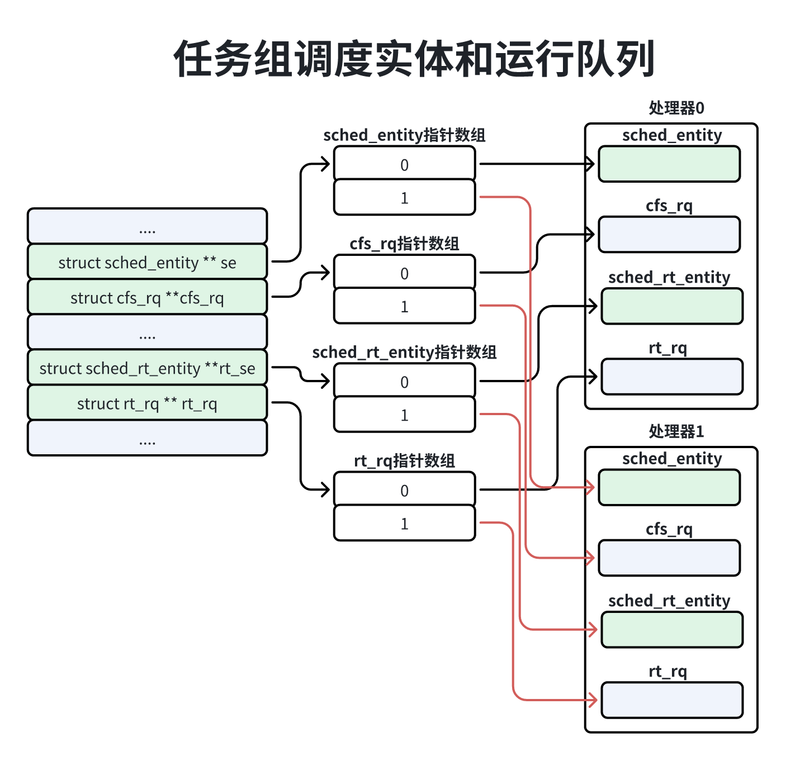

进程调度
一、调度策略
Linux内核支持一下调度策略：
限期进程使用限期调度策略（SCHED_DEADLINE）；
实时进程支持两种调度策略：
先进先出调度策略（SCHED_FIFO）；
轮流调度策略（SCHED_RR）；
普通进程支持两种调度策略：
标注轮流分时（SCHED_NOEMAL）；
空闲（SCHED_IDLE）；
老的还有批量调度策略（SCHED_BATCH），在内核引入完全公平调度算法之后此调度策略被废弃；
限期调度参数有3个参数：
运行时间runtime；
截止限期deadline；
周期period；
如图所示，每个周期运行一次，在截止限期之前执行完，一次运行的时间长度是runtime；
先进先出调度没有时间片，非常霸道，如果没有更高优先级的实时进程，并且它不睡眠，就会一直霸占处理器。
轮流调度有时间片，进程用完时间片以后加入优先级对应运行队列尾部，把处理器让给优先级相同的其他实时进程。
标准轮流分时策略使用完全公平调度算法，把处理器时间公平的分配给每个进程。
空闲调度策略用来执行优先级比较低的后台作业，优先级比使用标准轮流分时策略和相对优先级为19的普通进程还要低，进程的相对优先级对空闲调度策略没有影响。
二、进程优先级
限期进程的优先级比实时进程高，实时进程的优先级比普通进程高。
限期进程的优先级是-1。
实时进程的实时优先级是1~99，优先级数值越大，表示优先级越高。
普通进程的静态优先级是100~139，优先级数值越小优先级越高，可通过修改nice值（相对优先级，取值范围是-20 ~ 19）来改变普通进程的优先级，优先级等于120+nice值。
在task_struct结构体中，可以看到4个成员和优先级有关：
x1// 位置：include/kernel/sched.h2
3struct task_struct {4 ....5 int prio;6 int static_prio;7 int normal_prio;8 unsigned int re_priority;9 ....10}参数说明：
prio：调度优先级，数值越小优先级越高，大多数情况下prio值等于normal_prio，特殊情况，如果进程a占用实时互斥锁，进程b正在等待锁，进程b的优先级比进程a的优先级高，那么进程a的优先级会临时提高到进程b的优先级，即进程a的prio值等于进程b的prio值；
static_prio：静态优先级；
针对限期进程来说，没有意义，总是0；
针对实时进程来说，没有意义，总是0；
针对普通进程来说，120+nice值，数值越小，表示优先级越高；
normal_prio：正常优先级，数值越小，表示优先级越高；
针对限期进程来说，-1；
针对实时进程来说，99-rt_priority；
针对普通进程来说，就是static_prio；
rt_priority：实时优先级；
针对限期进程来说，没意义，总是0；
针对实时进程来说，范围是1~99，数值越大，表示优先级越高；
针对普通进程来说，没意义，总是0；
如果优先级低的进程1占有实时互斥锁，优先级高的进程2等到实时互斥锁，将把进程1的优先级提升到进程2，这个过程称为优先级集成。
总结：
整体来说，限期进程优先级 > 实时进程优先级 > 普通进程优先级；
限期进程优先级查看prio字段值，数值越小优先级越高；
实时进程优先级查看rt_priority，范围是1~99，数值越大，优先级越高；
普通进程优先级查看static_prio，范围是100~139=120+nice值，数值越小，优先级越高；
注意实时互斥锁的占有，会临时提升进程的优先级与等待锁的进程优先级相同；
三、调度类
为了方便添加新的调度策略，内核中抽象了一个调度类sched_class，目前使用了5种调度类：
| 调度类 | 调度策略 | 调度算法 | 调度对象 |
|---|---|---|---|
| 停机调度类 stop_sched_class | 无 | 无 | 停机进程 |
| 限期调度类 dl_sched_class | SCHED_DEADLINE | 最早期限优先 | 限期进程 |
| 实时调度类 rt_sched_class | SCHED_FIFO|SCHED_RR | 先进先出|轮流调度 | 实时进程 |
| 公平调度类 cfs_sched_class | SCHED_NORMAL | 完全公平调度算法 | 普通进程 |
| 空闲调度类 idle_sched_class | 无 | 无 | 每个处理器上的 空闲线程 |
这5种调度类的优先级从高到低一次是：停机调度类、限期调度类、实时调度类、公平调度类和空闲调度类。
停机调度类
停机调度类是优先级最高的调度类，停机进程(stop-task)是优先级最高的进程，可以抢占所有其他进程，其他进程不可以抢占停机进程，停机（stop是指stop machine）的意思是处理器停下来，做更紧急的事情。
目前只有迁移线程属于停机调度类，每个处理器有一个迁移线程（名称，migration/<cpu_id>）用来吧进程从当前处理器迁移到其他处理器，迁移线程对外伪装成实时优先级是99的先进先出实时进程。
停机进程没有时间片，如果它不主动让出处理器，那么它将一直霸占处理器。
引入停机调度类的一个原因是支持限期调度类，迁移线程的优先级必须比限期进程的优先级高，能够抢占所有其他进程，才能快速处理调度发出的迁移请求，把进程从当前处理器迁移到其他处理器。
限期调度类
限期调度类使用最早限期优先算法，使用红黑树把进程按照截止限期从小到大排序，每次调度时优先选择截止限期最小的进程。
如果限期进程用完了它的运行时间，将让出处理器，并且把它从运行队列中删除，在下一个周期开始，重新把它添加到运行队列中。
实时调度类
实时调度类为每个调度优先级维护一个队列，代码片段：
61// 位置 kernel/sched/sched.h2
3struct rt_prio_array{4 DECLARE_BITMAP(bitmap, MAX-RT_PRTO + 1); /*包含一个座位分隔符的位*/5 struct list_head queue(MAX_RT_PRIO);6}位图bitmap用来快速查找第一个非空队列，数组queue的下标是实时进程的调度优先级，下标越小，优先级越高。
每次调度，先找到优先级最高的第一个非空队列，然后从队列中选择第一个进程。
使用先进先出调度策略的进程没有时间分片，如果没有优先级更高级的进程，并且它不主动让出处理器，那么它将一直霸占处理器。
使用轮流调度策略的进程有时间片，用完时间片以后，进程加入到队列的尾部，默认时间片时5毫秒，可以通过文件"/proc/sys/kernel/sched_rt/timeslice_ms"修改时间片。
公平调度类CFS
公平调度类使用完全公平调度算法，完全公平调度算法引入了虚拟运行时间的概念，虚拟运行时间=实际运行时间 x nice0对应的权重 / 进程的权重。
nice的值和权重对应关系如下：
121// 位置：kernel/sched/core.c2
3const int sched_prio_to_weight[40] = {4 /* -20 */ 88761, 71755, 56483, 46273, 36291,5 /* -15 */ 29154, 23254, 18705, 14949, 11916,6 /* -10 */ 9548, 7620, 6100, 4904, 3906,7 /* -5 */ 3121, 2501, 1991, 1586, 1277,8 /* 0 */ 1024, 820, 655, 526, 423,9 /* 5 */ 335, 272, 215, 172, 137,10 /* 10 */ 110, 87, 70, 56, 45,11 /* 15 */ 36, 29, 23, 18, 15,12};nice0对应的权重是1024，nice n-1的权重大约是nice n权重的1.25倍。
使用空闲调度策略的普通进程的权重是3，nice值队权重没有影响，定义如下：
31// 位置：kernel/sched/sched.h2
3完全公平调度算法使用红黑树把进程按虚拟运行时间从小到大排序，每次调度时选择虚拟运行时间最小的进程。
显然，进程的静态优先级越高，权重越大，在实际运行时间相同的情况下，虚拟运行时间越短，进程累计的虚拟运行时间增加的越慢，在红黑树中向右移动的速度越慢，被调度器选中的机会就约到，被分配的月星时间相对越多。
调度周期：在某个时间长度可以保证运行队列中的每个进程至少运行一次，这个时间长度称为调度周期。
调度最小颗粒：为了防止进程切换太频繁，进程被调度后应该至少运行一小段时间，把这个时间长度称为最小颗粒，默认值是0.75毫秒，可以通过“/proc/sys/kernel/sched_min_granularity_ns”调整。
如果运行队列中的进程数量大于8，那么调度周期 = 调度最小颗粒 * 进程数量，否则调度周期是6毫秒。
进程的时间片计算公式：进程时间片 = 调度周期 * 进程的权重 / 运行队列中所有进程的权重总和。
这个时间片计算公式计算出来的就是理想的运行时间。
空闲调度类
每个处理器上有一个空闲线程，即0号线程，空闲调度类的优先级最低，仅当没有其他进程可以调度的时候，才会调度空闲线程。
三、运行队列
每个处理都有一个运行队列，结构体是rq，定义的全局变量如下：
31// 位置：kernel/sched/core.c2
3DEFINE_PER_CPU_SHARED_ALLGNED(struct r, runqueues);如下图所示，结构体rq中嵌入了公平运行队列cfs、实时运行队列rt和期限运行队列dl，停机调度类和空闲调度类在每个处理器上只有一个内核线程，不需要运行队列，直接定义成员stop和idle分配指向迁移线程和空闲线程。

四、任务分组
任务分组的意义
场景说明：
执行“make -j10”（-j10表示同时执行10条命令），编译Linux内核，同时运行视频播放器，如果给每个进程平均分配CPU时间，会导致视频播放很卡；
用户1启动了100个进程，用户2启动了1个进程，如果给每个进程平均分配CPU时间，用户2的进程智能得到不到1%的CPU时间，用户的体验很差；
通过以上场景，可以通过分组的方式来解决以上的问题。场景1中编译内核放在一个组，视频播放放到另外一个进程组，给两个任务组分配分配50%的CPU时间；场景2中，给用户1和用户2分配创建一个任务组，给两个任务组分配分配50%的CPU时间。
任务分组的方式
自动组
自动组，配置宏是CONFIG_SCHED_AUTOGROUP。
自动组，在创建会话时会创建一个自动组，会话里面所有进程是自动组的成员，启动一个中断窗口就会创建一个会话。
在运行过程中可以同问文件“/proc/sys/kernel/sched/sched_autogroup_enabled”开启或者关闭该功能，默认值是1。
实时自动组的源文件是“kernel/sched/auto_group.c”。
CPU控制组
CPU控制组，即控制组（cgroup）的CPU控制器，需要打开配置宏CONFIG_CGROUPS和CONFIG_CGROUP_SCHED，如果公平调度类要支持任务组，打开配置宏CONDIG_FAIR_GROUP_SCHED；如果实时调度类要支持任务组，打开配置宏CONFIG_RT_CGROUP_SCHED。
CPU控制组可以使用cgroup创建任务组和把进程加入任务组，cgroup已经从版本1（cgroup v1）演进到版本2（cgroup v2），版本1可以创建多个控制组层级树，版本2只有一个控制组层级树。
使用cgroup版本1的CPU的控制器配置如下：
在目录“/sys/fs/cgroup”下挂载tmpgs文件系统：
11mount -r rmpfa cgroup_root /sys/fs/cgroup在目录“/sys/fs/cgroup”下创建子目录“cpu”：
11mkdir /sys/fs/cgroup/cpu在目录“/sys/fs/cgroup/cpu”下股灾cgroup文件系统，把CPU控制器关联到控制组层级树：
11mount -t cgroup -o cpu none /sys/fs/cgroup/cpu创建2个任务组：
31cd /sys/fs/cgroup/cpu2mkdir multimedia // 创建multimidia任务组3mkdir browser // 创建browser任务组指定两个任务组的权重：
21echo 2048 > multimedia/cpu.shares2echo 1024 > browser/cpu.shares把线程加入到任务组：
21echo <pid1> > browser/tasks2echo <pid2> > multimedia/cgroup.procs也可以把线程加入到任务组，指定线程组中的任意一个线程标识符，就会把线程组得物所有线程加入到任务组：
21echo <pid1> > browser/cgroup.procs2echo <pid2> > multimedia/cgroup.procscgroup版本2从内核4.15开始支持CPU控制器，使用cgroup版本2配置CPU控制的方法：
在目录“sys/fs/cgroup”下挂载tmpfs文件系统：
11mount -t tmpfs cgroup_root /sys/fs/cgroup在目录“/sys/fs/cgroup”下挂载cgroup2文件系统：
11mount -t cgroup2 none /sys/fs/cgroup在根控制组开启CPU控制器：
21cd /sys/fs/cgroup2echo "+cpu" > cgroup.subtree_control创建2个任务组：
21mkdir multimedia // 创建moltimedia任务组2mkdir browser // 创建browser任务组指定2个任务组的权重：
21echo 2048 > multimedi/cpu.weight2echo 1024 > browser/cpu.weight把线程组加入到控制组：
21echo <pid1> > browser/cgroup.procs2echo <pid2> > multimedia/cpu.weight把线程加入到控制组，控制默认支持线程组，如果想把线程加入到控制组，必须把控制组类型设置为线程化的控制组，方法是写字符串"threaded"到文件"cgroup.type"中。在现成话的控制组中，如果写文件"cgroup.procs"，将会把线程组中的所有线程都加入到控制组中：
51echo threaded > browser/cpu.type2echo <pid1> browser/cgroup.threads3
4echo threaded > multimedia/cpu.type5echo <pid2> > multimedia/cgroup.threads数据结构
任务组的数据结构是task_group，默认的任务组是根任务组（全局变量 root_task_group），默认情况下所有进程属于根任务组。
引入任务组以后，因为调度器的调度对象不仅仅是进程，所以内核抽象出内核调度实体，调度器的调度对象是调度实体，调度实体是进程或者任务组。
下边展示了进程描述符中嵌入了公平、实时和期限3种调度实体，成员sched_class指向进程所属的调度类，进程可以更换调度类，并且可以使用调度类对应的调度实体。
| 成员 | 说明 |
|---|---|
| const struct sched_class *sched_class | 调度类 |
| struct sched_entity se | 公平调度实体 |
| struct sched_rt_entity rt | 实时调度实体 |
| struct sched_dl_entity dl | 限期调度实体 |
下图所示是任务组在每个处理器上有公平调度实体、公平运行队列、实时调度实体和实时运行队列，根任务组比较特殊，没有公平调度实体和实时调度实体。
任务组的下级公平调度实体加入任务组的公平运行运行队列，任务组的公平调度实体加入上级任务组的公平运行队列；
任务组的下级实时调度实体加入任务组的事实运行队列，任务组的实时调度实体加入上级任务组的实时运行队列；
为什么任务组在每个处理器上有一个公平调度实体和一个公平运行队列呢？
因为任务组包含多个进程，每个进程可能在不同的处理器上运行，同理，任务组在每个处理器上也有一个实时调度实体和一个实时运行队列。
在每个处理器上，计算任务组的公平调度实体的权重方法如下（参考”kernel/sched/fair.c“）中的阿哈湖update_cfs_shares：
公平调度实体的权重 = 任务组的权重 * 负载比例；
公平调度实体的负载比例 = 公平运行队列权重 / (任务组的平均负载 - 公平运行队列的平均负载 + 公平运行队列的权重)；
公平运行队列的权重 = 公平运行队列中所有调度实体的权重综合；
任务组的平均负责 = 所有贡品运行队列的平均负载的总和；
为什么负载比例不是公平运行队列的平均负载 / 任务组的平均负责呢 ？
公平运行队列的权重是实时负载，而公平运行队列平均负载时上一次计算的负载值，更新被延迟了，我们使用实时负载计算权重。
在每个处理器上，任务组的实时调度实体的调度优先级，取实时运行队列中所有实时调度实体的最高调度优先级。用数据结构描述任务组的调度实体和运行队列如图所示：

根任务组没有公平实体和实时调度实体，公平运行队列指针指向运行队列中嵌入的公平运行队列，实时运行队列指针指向运行队列中嵌入的事实运行队列，如下图：
假设普通进程p在处理器n上运行，它属于任务组g，数据结构体如下图所示：
成员depth是调度实体在调度树中的深度，任务组g的深度是d，进程p的深度是（d+1）；
成员parent指向调度树中的父亲，进程p的父亲是任务组g；
成员cfs_rq指向调度实体所属的公平运行队列，进程p所属的公平运行对啦是任务组g在处理器n上拥有的公平运行队列；
成员my_q指向调度实体有用的公平运行队列，任务组拥有公平运行队列，进程没有公平运行队列，任务组g在每个处理器上有一个公平调度实体和一个公平运行队列，处理器n上的调度实体的成员my_q指向处理器上n上的公平运行队列；
五、调度进程
调度进程的核心函数是__schedule()，函数原型如下：
21kernel/sched/core.c2static void __sched notrace __schedule(bool preempt);参数premmpt表示是否抢强制占调度，为true的话会强制剥夺当前进程处理器的使用权，false的话，表示主动调度，当前进程主动让出处理器。
主动调度进程的函数是schedule()，它把主要工作委托给了__schedule()函数。
函数__schedule的主要处理过程如下：
1. 调用pick_next_task以选择下一个进程；
2. 调用context_switch以切换进程；
选择下一个进程
函数pick_next_tas负责选择下一个进程，代码：
401// 位置： kernel/sched/core.c2
3static inline struct task_struct *4pick_next_task(struct rq *rq, struct task_struct *prev, struct rq_flags *rf)5{6 const struct sched_class *class;7 struct task_struct *p;8
9 /*10 * 优化：如果我们进程属于公平调度类，11 * 我们可以直接调用公平调度类的pick_next_task方法12 */13 if (likely((prev->sched_class == &idle_sched_class ||14 prev->sched_class == &fair_sched_class) &&15 rq->nr_running == rq->cfs.h_nr_running)) {16
17 p = fair_sched_class.pick_next_task(rq, prev, rf);18 if (unlikely(p == RETRY_TASK))19 goto again;20
21 /* 假设公平调度类的写一个调度类是空闲调度类 */22 if (unlikely(!p))23 p = idle_sched_class.pick_next_task(rq, prev, rf);24
25 return p;26 }27
28again:29 for_each_class(class) {30 p = class->pick_next_task(rq, prev, rf);31 if (p) {32 if (unlikely(p == RETRY_TASK))33 goto again;34 return p;35 }36 }37
38 /* 空闲调度类应该总是一个可运行的进程 */39 BUG();40}函数pick_next_task针对公平调度类做了优化：如果当前进程属于空闲调度类或公平调度类，并且所有可运行的进程属于公平调度类，那么直接调用公平调度类的pick_next_task方法来选择下一个进程，如果公平调度类没有选中下一个进程，那么空闲调度类选择下一个进程。
一般情况下是从优先级最高的调度类开始，调用调度类的pick_next_task方法来选择下一个进程，如果选中的下一个进程，就调度这个进程，否则继续选择优先级更低的调度类选择下一个进程。现在支持5种调度类，优先级从高到低一次是停机、限期、实时、公平和空闲。
停机调度类选择下一个进程，停机调度类中用于选择下一个进程的函数是pick_next_task_stop，算法是如果运行队列的成员stop指向某个进程，并且这个进程在运行队列中，那么返回成员stop指向的进程，否则返回空指针。
限期调度类选择下一个进程，限期调度类中用于选择下一个进程的函数是pick_next_task_dl，算法是从限期运行队列中选择绝对截止限期最小的进程，就是红黑树中最左边的进程，限期调度类不支持任务组，所以不需要考虑调度实体是任务组的请款；
实时调度类选择下一个进程，实时调度类中用于选择下一个进程的函数是pick_next_task_rt，算法如下：
如果实时运行队列没有加入运行队列（rt_rq.rt_queued 等于0，如果在一个处理器上所有实时进程在一个周期内用完了所有运行时间，就会吧实时运行队列从运行队列中删除），就会返回空指针；
从跟任务在当前处理器上的实时运行队列开始，选择优先级最高的调度实体；
如果选中的调度实体是任务组，那么继续从这个任务组在当前处理器上的实时运行队列中选择优先级最高的调度实体，重复这个步骤，直到选中的调度实体是进程为止；
公平调度类选择下一个进程，公平调度类用于选择下一个进程的函数是pick_next_task_fair，算法如下：
从根任务组中在当前处理器上的公平运行队列中，选择虚拟机运行时间最小的调度实体，就是红黑树中最左边的调度实体；
如果选中的调度实体是任务组，那么继续从这个任务组在当前处理器上公平运行队列中选择虚拟运行时间最小的调度实体，重复这个步骤，直到选中的调度实体是进程为止；
空闲调度类选择下一个进程，空闲调度类用于选择下一个进程的函数是pick_next_task_idle，算法是返回运行队列的成员idle指向的空闲线程；
切换进程
切换进程的函数是context_switch，执行的主要工作如下：
1. switch_mm_irqs_off负责切换进程用户虚拟地址空间；
2. switch_to负责切换处理器的寄存器；
context_switch代码如下：
501// 位置 kernel/sched/core.c2
3static __always struct rq*4context_switch(struct rq *rq, struct task_struct *prev, struct task_struct *next,5 struct pin_cookie cookie)6{7 struct mm_struct *mm, *oldmm;8 // prepare_task_switch函数，执行进程切换的准备工作，调用每种处理器架构必须定义的9 // 函数prepare_arch_switch，ARM64架构没有定义板书prepare_arch_switch，10 // 使用默认定义，它是一个空的宏11 prepare_task_switch(rq, prev, next);12 13 mm = next->mm;14 oldmm = prev->active_mm;15 // 开始上下文切换，是每种处理器架构必须定义的函数，ARM64架构中没有定义此函数会使用默认定义16 // 它也是一个空的宏17 arch_start_context_switch(prev);18 19
20 // 如果下一个进程时内核进程（成员mm是空指针），内核线程没有用户虚拟地址空间，那么需要借用21 // 上一个进程的用户虚拟地址空间，把借来的用户虚拟地址空间保存在成员active_mm中，内核线程在22 // 借用的用户虚拟地址空间的上面运行。23 if(!mm){24 next ->active_mm = oldmm;25 atomic_inc(&oldmm->mm_count);26 // 通知处理器架构不需要切换用户虚拟地址空间，这种加速进程切换技术称为惰性TLB，27 // ARM64架构定义的函数enter_lazy_tlb是一个空函数28 enter_lazy_tlb(oldmm, next);29 }else{30 // 如果下一个进程是用户进程，直接调用switch_mm_irqs_off函数进行上下文切换31 switch_mm_irqs_off(oldmm, mm, next);32 }33 34 // 如果上一个进程时内核线程，那么把成员acitve_mm设置成空指针，断开它和借用的用户虚拟地址空间35 // 的联系，把它借用的用户虚拟地址空间保存在运行队列的成员prev_mm中36 if(!prev->mm){37 prev->activ_mm = NULL;38 rq->prev_mm - oldmm;39 }40 41 // 此函数是每种处理器必须定义的函数，负责切换处理器的寄存器42 /* 这里我们只切换寄存器状态和栈 */43 switch_to(prev, next, prev);44 45 // 是编译器优化的屏障，防止编译器优化时调整finish_task_switch的顺序，函数46 // finish_task_switch负责进程切换后执行清理工作47 barrier();48 49 return finish_task_switch(prev);50}切换用户虚拟地址，ARM64架构使用默认的switch_mm_irqs_off定义的宏如下：
551// 位置：include/linux/mmu_context.h2
3
7// switch_mm代码如下8// 位置：arch/arm64/include/asm/mmu_context.h9static inline void10switch_mm(struct mm_struct *prev, struct mm_struct *next,11 struct task_struct *tsk)12{13 // 如果prev!=next的话就是术后上一个进程和下一个进程的用户虚拟地址空间不同，14 // 就调用函数__switch_mm切换用户虚拟地址空间15 if (prev != next)16 __switch_mm(next);17
18 /*19 * 更新调入进程保存的寄存器TTBR0_EL1的值，因为肯定还没有初始化（调用者函数activate_mm），20 * 或者ASID自从上蔟运行以来已经改变（在同一个线程组的另一个线程切换上下文后）21 *22 * 避免保存的寄存器TTBR0_EL1的值设置为swapper_pg_dir(init_mm 通过函数idle_task_exit)23 */24 // 如果通过寄存器TTBR0_EL1仿真PAN特性，那么把进程的地址空间标识符和页全局目录物理地址保存到进程、25 // 描述符成员thread_info.ttbr0，等进程退出内核模式时使用进程描述符的成员thread_info.ttbr0设置26 // 寄存器TTBR0_EL1。27 // PAN（Privileged Access Never）特性用来禁止访问内访问用户虚拟地址，如果处理器不支持PAN特性，那么28 // 内核通过切换寄存器TTBR0_EL1仿真PAN特性：进程进入内核模式时把寄存器TTBR0_EL1设置为保留的地址空间标识符0，和29 // 内核的页全局目录（swapper_pg_dir）后面的宝丽布区域的物理地址，退出内核模式时把寄存器TTBR0_EL1设置的地址30 // 空间标识符和页全局目录的物理地址，使用保留的地址空间标识符0可以避免空中的页表缓存的表项，防止内核访问用户虚拟地址31 if (next != &init_mm)32 update_saved_ttbr0(tsk, next);33}34
35static inline void __switch_mm(struct mm_struct *next)36{37 unsigned int cpu = smp_processor_id();38
39 /*40 * init_mm pgd没有包含任何用户虚拟地址的映射，对于TTBR1的内核虚拟地址总是有效的，只设置保留TTBR041 *42 * 如果切换到内核的内存描述符init_mm，那么寄存器TTBR0_EL1设置为保留的空间标识符0和保留的零页43 * empty_zero_page的物理地址，目前只有这种情况需要切换到内核的内存描述符init_mm：内核支持处理器44 * 热插拔，当处理器下线时，如果空闲线程借用用户进程内存描述符，那么必须切换到内核的内存描述符init_mm45 * 寄存器TTBR0_EL1（转换表基准寄存器0，Translation table base register 0）用来存放进程的地址攻坚标识符和46 * 页全局目录的物理地址，其中高16位是地址空间标识符，处理器的页表缓存使用地址空间标识符区分不同进程的虚拟地址空间47 */48 if (next == &init_mm) {49 cpu_set_reserved_ttbr0();50 return;51 }52
53 // 重点，为进程分配地址空间标识符54 check_and_switch_context(next, cpu);55}切换寄存器，宏switch_to把工作委托给了__switch_to:
61// 位置：include/asm-generic/swithc.h2#define switch_to(prev, next, last)4do{5((last) = __switch_to((prev), (next)));6}while(0)
ARM64架构定义的函数__switch_to如下：
371// 位置：arch/arm64/kernel/process.c2
3__notrace_funcgraph struct task_struct *__switch_to(struct task_struct *prev,4 struct task_struct *next)5{6 struct task_struct *last;7
8 // 切换浮点寄存器 ---往下看1---9 fpsimd_thread_switch(next);10 // 切换线程本地存储相关的寄存器11 tls_thread_switch(next);12 // 切换调试寄存器13 hw_breakpoint_thread_switch(next);14 // 把上下文标识寄存器CONTEXTTIDR_EL1设置为下一个进程的进程号15 contextidr_thread_switch(next);16 // 使用当前处理器的每处理器变量__entry_task记录下一个进程的进程描述符地址，17 // 因为内核使用用户栈指针寄存器SP_EL0存放当前进程描述符的第一个成员thread_info的地址，18 // 但是空间会改变用户指针寄存器SP_EL0，所以使用当前处理器的每处理器变量__entry_task记录下一个19 // 进程描述符的地址，以便从用户空间进入内核空间时可以恢复用户栈指针寄存器SP_EL020 entry_task_switch(next);21 // 调用此函数根据下一个进程可访问的虚拟地址空间上限恢复用户访问覆盖（User Access Override）状态。22 // 开启UAO特性后，get_user()/put_user()使用非特权的加载/存储指令访问用户地址空间，当使用函数set_fs(KERNEL_DS)23 // 把进程可访问的地址空间上限设置为内核地址空间上限时，设置覆盖位允许非特权的加载存储指令访问内核地址空间24 uao_thread_switch(next);25
26 /*27 * 在这个处理器上执行完前面的所有页表缓存或者缓存维护操作28 * 以防线程迁移到其他处理器29 */30 // 数据同步屏障，确保屏障前面的缓存维护操作和页表缓存维护操作执行完31 dsb(ish);32
33 /* 实际的线程切换 切换通用寄存器*/34 last = cpu_switch_to(prev, next);35
36 return last;37}切换浮点寄存器：
fpsimd_thread_switch，主要负责浮点寄存器（Floating-point FP），因为不同处理器架构的浮点寄存器不同，而且有的处理器架构不支持浮点运算，所以各种处理器架构需要自己实现函数fpsimd_thread_switch，ARM64处理器支持浮点运算，浮点运算和单指令多数据（Single Instruction Multople Data SIMD）功能共用32个128位寄存器，这些寄存器称为浮点寄存器，用于向量运算时称为向量寄存器，标记位V0-V31（V就是vector），用于标量（）运算是记位Q0-Q31（Q就是Quadword 既4个字 1个字=4个字节=32位）。因为不是所有处理器都支持浮点运算，所以内核不允许使用浮点数，只有用户空间可以使用浮点数，利用这个特性，处理器从进程切换到内核线程时不需要切换浮点寄存器，如果处理器进程P切换到内核线程，然后从内核线程切换到进程P，那么2次进程切换都不需要切换浮点寄存器。
切换出去的进程把浮点寄存器值保存在进程描述符成员thread.fpsimd_state中。
ARM64架构中fpsimd_thread_switch函数的实现如下：
321// 位置：arcn/arm64/kernel/fpsimd.c23void fpsimd_thread_switch(struct task_struct *next)4{5// 如果处理器不支持浮点和SIMD 直接返回6if (!system_supports_fpsimd())7return;89// 如果当前进程是用户进程，并且处理器的浮点状态是当前进程的，那么把浮点寄存器保存到10// 当前进程的进程描述符的成员thread.fpsimd_state中11if (current->mm && !test_thread_flag(TIF_FOREIGN_FPSTATE))12fpsimd_save_state(¤t->thread.fpsimd_state);1314// 如果下一个进程时用户进程的话15if (next->mm) {16struct fpsimd_state *st = &next->thread.fpsimd_state;1718// 如果当前处理器浮点状态是下一个进程的浮点状态，那么清除下一个进程的标志位TIF_FOreIGN_FPSTATE19// 指示当前处理器的浮点状态是下一个进程的浮点状态20if (__this_cpu_read(fpsimd_last_state) == st21&& st->cpu == smp_processor_id())22clear_ti_thread_flag(task_thread_info(next),23TIF_FOREIGN_FPSTATE);24// 当前处理器的浮点状态不是下一个进程的浮点状态，设置下一个进程的标志位TIF_FOREIGN_FPSTATE25// 指示当前处理器的浮点状态不是下一个进程的，当前进程准备返回用户模式时，在函数do_notify_resume26// 中，发现进程设置了标志位TIF_FOREIGN_FPSTATE就会调用函数fpsimd_restore_current_state27// 从进程描述符的成员thread.fpsinmd_state恢复浮点寄存器，并清除标志位TIF_FOREIGN_FPSTATE28else29set_ti_thread_flag(task_thread_info(next),30TIF_FOREIGN_FPSTATE);31}32}fpsimd_save_state：主要负责保存浮点寄存器的状态，代码如下：311// 位置：arch/arm64/kernel/enrry-fpsimd.S23ENTRY(fpsimd_save_state)4fpsimd_save x0, 85ret6ENDPROC(fpsimd_save_state)78// fpsimd_save宏状态在arch/arm64/include/asm/fpsimdmacro.h头文件中9.macro fpsimd_save state, tmpnr10stp q0, q1, [\state, #16 * 0] // 把寄存器q0和q1存储到地址(x0+16)11stp q2, q3, [\state, #16 * 2]12stp q4, q5, [\state, #16 * 4]13stp q6, q7, [\state, #16 * 6]14stp q8, q9, [\state, #16 * 8]15stp q10, q11, [\state, #16 * 10]16stp q12, q13, [\state, #16 * 12]17stp q14, q15, [\state, #16 * 14]18stp q16, q17, [\state, #16 * 16]19stp q18, q19, [\state, #16 * 18]20stp q20, q21, [\state, #16 * 20]21stp q22, q23, [\state, #16 * 22]22stp q24, q25, [\state, #16 * 24]23stp q26, q27, [\state, #16 * 26]24stp q28, q29, [\state, #16 * 28]25stp q30, q31, [\state, #16 * 30]! // 把寄存器q30和q31存储到地址（x0 + 16 * 30）然后把寄存器x0加上（16 * 30）26mrs x\tmpnr, fpsr27str w\tmpnr, [\state, #16 * 2]28mrs x\tmpnr, fpcr29str w\tmpnr, [\state, #16 * 2 + 4]30.endm31寄存器x0存放当前进程的进程描述符的成员thread.fqsind_state的地址。
该函数把浮点寄存器q0~q31、浮点状态寄存器（Floating-point Statue Register FPSR）和浮点控制寄存器（Floating-point Control Register，FPCR）保存到当前进程的描述符的成员thread.fqsimd_state中。
切换通用寄存器：函数cpu_switch_to切换下面这些通用的寄存器。
由被调用函数负责保存的寄存器x19~x28，被调用函数必须保证这些寄存器在函数执行前后的值相同，如果被调用函数需要使用其中一个寄存器，必须先把寄存器的值保存在栈里边，在函数返回前恢复寄存器的值；
寄存器x29，即帧指针（Frame Pointer ，FP）寄存器；
栈指针（Stack Pointer， SP）寄存器；
寄存器x30，即链接寄存器（Link Register LR）寄存器；
用户栈指针寄存器SP_EL0，内核使用它存放当前进程的进程描述符的第一个成员thread_info的地址；
521// 位置 arch/arm64/kernel/entry.S23/**4* 函数cpu_switch_to有2个参数；5* 寄存器x0存放上一个进程的进程描述符的地址6* 寄存器x1存放下一个进程的进程描述符的地址7*/8ENTRY(cpu_switch_to)9// 寄存器x10存放进程描述符的成员thread.cpu_context的偏移10mov x10, #THREAD_CPU_CONTEXT11// 寄存器x8存放上一个进程的进程描述符的成员thread.cpu_context的偏移12add x8, x0, x1013// 寄存器x9保存栈指针14mov x9, sp1516/**17* 把上一个进程的寄存器x19~x28、x29、SP和LR保存到上一个进程的进程描述符成员thread.cpu_context18* 寄存器LR存放函数的返回地址，是函数context_switch中调用函数cpu_switch_to之后的一行代码19* 指令stp（stop pair）表示存储一对，指令"stp x19,x20,[x8],#16"表示把寄存器x19和x20存储到寄存器x820* 里面的地址，然后把寄存器x8加上1621*/22stp x19, x20, [x8], #16 // 保存由被调用者负责保存的寄存器23stp x21, x22, [x8], #1624stp x23, x24, [x8], #1625stp x25, x26, [x8], #1626stp x27, x28, [x8], #1627stp x29, x9, [x8], #1628str lr, [x8]2930// 寄存器x8存放下一个进程的进程描述符的成员thread.cpu_context的地址31add x8, x1, x103233/**34* 使用下一个进程的进程描述符的成员thread.cpu_context保存的值恢复下一个进程的寄存器x19~x2835* x29、SP和LR，指令ldp（load pair）表示加载一对，指令"ldp x19, x20,[x8], #16"表示从寄存器36* x8里面的地址加载两个64位数据到寄存器x19和x20，然后把寄存器x8加上1637*/38ldp x19, x20, [x8], #16 // 恢复由被调用者负责保存的寄存器39ldp x21, x22, [x8], #1640ldp x23, x24, [x8], #1641ldp x25, x26, [x8], #1642ldp x27, x28, [x8], #1643ldp x29, x9, [x8], #1644ldr lr, [x8]45mov sp, x94647// 把用户指针寄存器寄存器SP_EL0设置为下一个进程的进程描述符的第一个成员thread_info的地址48msr sp_el0, x14950// 函数返回， 返回值是寄存器x0的值：上一个进程的进程描述符地址51ret52ENDPROC(cpu_switch_to)下图中描述了函数cpu_switch_to切换通用寄存器的过程，从进程prev切换到进程next，进程prev把通用寄存器的值保存在进程描述符的成员thread.cpu_context中，然后进程next从进程描述符的成员thread.cpu_context恢复通用的寄存器的值，使用用户指针寄存器SP_EL0存放进程next的进程描述符的成员thread_info的地址。
链接寄存器存放函数的地址，函数cpu_switch_to把链接寄存器设置为进程描述符的成员thread.cpu_context.
pc，进被调度后从返回地址开始执行，进程的返回地址分为以下2种情况：
如果进程时刚刚创建的新进程，函数copy_thread把进程的描述符成员thread.cpu.context.pc设置为函数tet_from_fork的地址；
对于其他情况，返回地址是函数context_switch中调用函数cpu_switch_to之后的一行代码，“last = 函数cpu_switch_to的返回值”，当进程被切花出去的时候，把这个返回地址记录在进程的描述符的成员thread.cpu_context.pc中；
执行清理工作：函数finish_task_switch在从进程prev切换到进程next后为进程prev执行清理工作，代码如下：
551// 位置：kernel/sched/core.c23static struct rq *finish_task_switch(struct task_struct *prev)4__releases(rq->lock)5{6struct rq *rq = this_rq();7struct mm_struct *mm = rq->prev_mm;8long prev_state;91011if (WARN_ONCE(preempt_count() != 2*PREEMPT_DISABLE_OFFSET,12"corrupted preempt_count: %s/%d/0x%x\n",13current->comm, current->pid, preempt_count()))14preempt_count_set(FORK_PREEMPT_COUNT);1516// rq是当前处理器的运行队列，如果进程prev是内核进程，那么rq->prev_mm存放它借用的内存描述符17// 这里把rq->prev_mm设置为空指针18rq->prev_mm = NULL;1920prev_state = prev->state;21// 计算进程prev的时间统计22vtime_task_switch(prev);23perf_event_task_sched_in(prev, current);24// 把prev->on_cpu设置为0，表示进程prev没有在任何的处理器伤上运行，25// 然后释放运行队列的锁，开启硬中断26finish_lock_switch(rq, prev);27// 执行处理器架构特定的清理工作，ARM64架构没有定义，使用默认空函数28finish_arch_post_lock_switch();2930fire_sched_in_preempt_notifiers(current);3132// 如果进程prev是内核线程，那么把它借用的内存描述符的应用计算减1，如果引用计算减到0，33// 就释放内存描述符34if (mm)35mmdrop(mm);3637// 如果进程prev的状态是TASK_DEAD就是说进程主动退出或者终止38if (unlikely(prev_state == TASK_DEAD)) {39// 调用进程prev所属调度类的task_dead方法40if (prev->sched_class->task_dead)41prev->sched_class->task_dead(prev);4243kprobe_flush_task(prev);4445// 如果结构体thread_info存放在进程描述符里面，而不是存放在内核栈的顶部，就释放进程的内核栈46/* 释放进程的内核栈 */47put_task_stack(prev);4849// 把进程描述符的引用计算-1 如果引用计数变0。就释放进程描述符50put_task_struct(prev);51}5253tick_nohz_task_switch();54return rq;55}
六、调度时机
调度进程的时机如下：
进程主动调用schedule()函数；
周期性的调度，抢占当前进程，强迫当前进程让出处理器；
唤醒进程的时候，被唤醒的进程可能抢占当前进程；
创建新的进程的时候，新进程可能抢占当前进程；
主动调度
进程在用户模式下运行的时候，无法直接调用schedule()函数，只能通过系统调用进入内核模式，如果系统调用需要等待某个资源，例如互斥锁或者信号量，就会把集成的状态设置为睡眠状态，然后调用schedule()函数来调度进程。
进程也可以通过系统调用sched_yield()让出处理器，这种情况下进程不会睡眠。
在内核中有以下3种主动调度进程：
1. 直接调用schedule()函数来调度进程；
2. 调用有条件重调度函数cond_resched()，在非抢占式内核中，函数cond_resched()判断当前进程是否设置了需要重新调度的标志，如果设置的话，就调度进程，在抢占式内核中函数cond_resched()是空函数，没有作用。
3. 如果需要等待某个资源，例如互斥锁或者信号量，那么把进程的状态设置为睡眠状态，然后调用schedule()函数来调度进程；
周期调度
有些”流氓“进程不会主动让出处理器，内核只能依靠周期性的时钟中断夺回处理器的控制权，时钟中断是调度器的脉搏，时钟中断处理程序检查当前进程的执行时间有没有超过限额，如果超过限额，设置需要重新调度的标志，当时钟中断程序准备把处理器还给被打断的进程时，如果被打断的进程在用户模式下运行，就检查有没有设置需要重新调度的标志，如果设置了，调用schedule()函数调度进程。
周期调度的函数是schedule_tick()，它调用当前进程所属调度类是task_tick方法，如果需要重新调度，就为当前进程的thread_info结构体的成员flags设置需要重新调度的标志位（_TIF_NEED_RESCHED），中断处理程序在返回的时候就会检查这个标志位。
周期调度类的周期调度：限期调度类的task_tick方法是函数task_tick_dl，函数task_tick_dl主要工作委托给了update_curr_dl函数，看下这update_curr_dl主要代码：
431// 位置： kernel/sched/deadline.c2
3static void update_curr_dl(struct rq *rq)4{5 struct task_struct *curr = rq->curr;6 struct sched_dl_entity *dl_se = &curr->dl;7 u64 delta_exec;8
9 ....10 11 delta_exec = rq_clock_task(rq) - curr->se.exec_start;12 if (unlikely((s64)delta_exec <= 0)) {13 if (unlikely(dl_se->dl_yielded))14 goto throttle;15 return;16 }17
18 ....19 20 // 计算限期进程的剩余运行时间21 dl_se->runtime -= delta_exec;22
23throttle:24 // 如果限期进程用完了运行时间或者主动让出处理器的话25 if (dl_runtime_exceeded(dl_se) || dl_se->dl_yielded) {26 // 设置节流标志27 dl_se->dl_throttled = 1;28 // 把当前进程从限期运行队列中删除29 __dequeue_task_dl(rq, curr, 0);30 // 如果当前进程临时提升为限期进程（可能因为占用某个限期进程等待的事实互斥锁）31 // 或者绝对截止限期已经过期，那么把当前进程重新加入限期运行队列，补充运行时间32 /// （如果绝对截止限期没有到期，函数start_dl_timer启动高清精度定时器。 33 // 到期时间是当前进程的绝对截止期限，到期的时候把进程重新加入到限期运行队列补充运行时间）34 if (unlikely(dl_se->dl_boosted || !start_dl_timer(curr)))35 enqueue_task_dl(rq, curr, ENQUEUE_REPLENISH);36
37 // 如果当前进程不在限期运行队列中，或者虽然在期限运行队列中但是绝对截止期限不是最小的38 // 那么给当前进程设置需要重新调度的标志位39 if (!is_leftmost(curr, &rq->dl))40 resched_curr(rq);41 }42 ....43}实时调度类的周期性调度：实时调度类的task_tick方法是函数task_tick_rt，主要代码：
311// 位置：kernel/sched/rt.c2
3static void task_tick_rt(struct rq *rq, struct task_struct *p, int queued)4{5 struct sched_rt_entity *rt_se = &p->rt;6
7 update_curr_rt(rq);8
9 watchdog(rq, p);10 11 // 如果调度策略不是轮流调度 直接返回12 if (p->policy != SCHED_RR)13 return;14
15 // 把时间片-1 如果没有用完时间片直接返回16 if (--p->rt.time_slice)17 return;18
19 p->rt.time_slice = sched_rr_timeslice;20
21
22 // 从当前进程的根任务组到任何一个层次，如果实时调度实体不是实时运行队列的唯一调度实体23 // 就把当前进程重新添加到实时运行队列的尾部，并且设置需要重新调度的标志位24 for_each_sched_rt_entity(rt_se) {25 if (rt_se->run_list.prev != rt_se->run_list.next) {26 requeue_task_rt(rq, p, 0);27 resched_curr(rq);28 return;29 }30 }31}公平调度类的周期调度：公平调度类的task_tick方法是函数task_tick_fair主要代码：
681// 位置：kernel/sched.fair.c2
3static void task_tick_fair(struct rq *rq, struct task_struct *curr, int queued)4{5 struct cfs_rq *cfs_rq;6 struct sched_entity *se = &curr->se;7
8 for_each_sched_entity(se) {9 cfs_rq = cfs_rq_of(se);10 // 从当前进程到根任务组每级公平调度实体，调用函数entry_tick,11 entity_tick(cfs_rq, se, queued);12 }13
14 if (static_branch_unlikely(&sched_numa_balancing))15 task_tick_numa(rq, curr);16}17
18/****************/19/// 函数eentry_tick主要代码 位置：kernel/sched/fair.c20static void21entity_tick(struct cfs_rq *cfs_rq, struct sched_entity *curr, int queued)22{23 ....24 25 // 如果公平运行队列的进程数量超过1，那么调用check_preempt_tick函数， 执行周期调度 26 if (cfs_rq->nr_running > 1)27 check_preempt_tick(cfs_rq, curr);28}29
30/****************/31//// check_preempt_tick周期调度函数 位置：kernel/sched/fair.c32static void33check_preempt_tick(struct cfs_rq *cfs_rq, struct sched_entity *curr)34{35 unsigned long ideal_runtime, delta_exec;36 struct sched_entity *se;37 s64 delta;38
39 /**40 * 如果当前调度实体的运行时间超过了理想的运行时间，那么设置需要重新调度的标志位41 * 理想运行时间 = 调度周期 * 当前公平调度实体的权重 / 公平运行队列中所有的调度实体的权重总和42 */43 ideal_runtime = sched_slice(cfs_rq, curr);44 delta_exec = curr->sum_exec_runtime - curr->prev_sum_exec_runtime;45 if (delta_exec > ideal_runtime) {46 resched_curr(rq_of(cfs_rq));s47 clear_buddies(cfs_rq, curr);48 return;49 }50
51
52 /**53 * 如果当前调度实体的运行时间大于或等于最小颗粒度，并且当前调度实体的虚拟运行时间和公平运行队列中54 * 第一个调度实体的虚拟运行时间的差值大于理想运行时间的话， 就需要重新设置调度的标志位55 * 56 */57 if (delta_exec < sysctl_sched_min_granularity)58 return;59
60 se = __pick_first_entity(cfs_rq);61 delta = curr->vruntime - se->vruntime;62
63 if (delta < 0)64 return;65
66 if (delta > ideal_runtime)67 resched_curr(rq_of(cfs_rq));68}中断返回时调度：如果进程正在用户模式下运行，那么中断抢占时，ARM64架构的中断处理程序入口是el0_irq，中断处理程序执行完以后，跳转的标号ret_to_user返回用户模式，标号ret_to_user判断当前进程的进程描述符成员thread_info.flags有没有设置标志位集合_TIF_WORK_MASK中的任何一个标志位，如果设置了其中一个标志位，那么跳转到标号work_pending，标号work_pending调用函数do_notify_resume。
491// 位置：arch/arm64/kernel/entry.S2
3ret_to_user:4 disable_irq // 禁止中断5 ldr x1, [tsk, #TSK_TI_FLAGS]6 and x2, x1, #_TIF_WORK_MASK7 cbnz x2, work_pending8finish_ret_to_user:9 enable_step_tsk x1, x210 kernel_exit 011ENDPROC(ret_to_user)12
13/*14 * Ok, we need to do extra processing, enter the slow path.15 */16work_pending:17 mov x0, sp // 'regs'18 // 寄存器x0存放第一个参数regs19 // 寄存器x1存放第二个参数task_struct.thread_info.flags20 21 // 调用do_notify_resume函数，主要判断进程描述符的成员thread_info.flags有没有设置需要重新调度22 // 的标志位_TIF_NEED_RESCHED，如果设置了就调用函数schedule()来调度进程23 bl do_notify_resume24 bl trace_hardirqs_on // 在用户空间执行时开启中断26 ldr x1, [tsk, #TSK_TI_FLAGS] // 重新检测单步执行28 b finish_ret_to_user29 30 31/**32 * 函数 do_notify_resume代码33 * 位置：arch/arm64/kernel/signal.c34 */35asmlinkage void do_notify_resume(struct pt_regs *regs,36 unsigned int thread_flags)37{38 trace_hardirqs_off();39 do {40 if (thread_flags & _TIF_NEED_RESCHED) {41 schedule();42 } else {43 ....44 }45
46 local_irq_disable();47 thread_flags = READ_ONCE(current_thread_info()->flags);48 } while (thread_flags & _TIF_WORK_MASK);49}唤醒进程时抢占
如下图所示，唤醒进程的时候，被唤醒的进程可能抢占当前进程。
1. 如果被唤醒的进程和当前进程属于相同的调度类，那么调用调度类的check_preempt_curr方法以检查是否可以抢占当前进程；
2. 如果被唤醒的进程所属的调度类的优先级高于当前进程所属的调度类的优先级，那么给当前进程设置需要重新调度的标志；

停机调度类的check_preempt_curr方法是函数check_premmpt_curr_stop，它是一个空函数。
限期调度类的check_premmpt_curr方法是函数check_premmpt_curr_dl算法是：如果被唤醒的进程的绝对截止期限小，那么给当前进程设置需要重新调度的标志。
实时调度类的check_premmpt_curr方法是函数check_preempt_curr_rt算法是如果被唤醒的进程的优先级比当前进程的优先级高，那么给当前进程设置需要重新调度的标志。公平调度类的check_preempt_curr方法是函数check_preempt_wakeup 代码如下：
681// 位置：kernel/sched/fair.c2
3static void check_preempt_wakeup(struct rq *rq, struct task_struct *p, int wake_flags)4{5 struct task_struct *curr = rq->curr;6 struct sched_entity *se = &curr->se, *pse = &p->se;7 ....8 // 如果当前进程的调度策略是SCHED_IDLE被唤醒的进程的调度策略是SCHED_NORMAL或者9 // SCHED_BATCH那么允许抢占，给当前进程设置需要重新调度的标志10 if (unlikely(curr->policy == SCHED_IDLE) &&11 likely(p->policy != SCHED_IDLE))12 goto preempt;13
14
15 // 如果被唤醒的进程的调度策略不是SCHED_NORMAL 那么不允许抢占当前进程，16 // 如果没有开启唤醒抢占的调度特性（默认开启唤醒抢占调度的特性），那么不允许抢占17 if (unlikely(p->policy != SCHED_NORMAL) || !sched_feat(WAKEUP_PREEMPTION))18 return;19
20 // 为下边调用wakeup_preempt_entity函数判断是否可以抢占做准备21 // 只能在属于同一个任务组的2个兄弟调度实体之间判断，所以函数find_matching_se需要22 // 为当前进程被唤醒的进程找到2个兄弟调度实体23 find_matching_se(&se, &pse);24 update_curr(cfs_rq_of(se));25 BUG_ON(!pse);26 // ---往下看----27 if (wakeup_preempt_entity(se, pse) == 1) {28 if (!next_buddy_marked)29 set_next_buddy(pse);30 goto preempt;31 }32
33 return;34
35preempt:36 resched_curr(rq);37 ....38
39 if (sched_feat(LAST_BUDDY) && scale && entity_is_task(se))40 set_last_buddy(se);41}42
43/**44 * 如果 当前进程的虚拟运行时间-被唤醒进程的虚拟运行时间 大于 虚拟唤醒粒度，那么允许被抢占45 * 给当前进程设置需要重新调度的标志46 * 47 * ”虚拟唤醒粒度“根据当前进程的权重转换成虚拟时间，全局变量sysctl_sched_wakeup_granularity48 * 存放唤醒粒度，单位是纳秒，默认值是10的6次方，即默认唤醒粒度是1毫秒，如果开启了49 * 配置宏CONFIG_SCHED_DEBUG，可以通过文件”/proc/sys/kernel/sched_wakeup_granularity“设置唤醒粒度。50 *51 * 空闲调度类的check_premmpt_curr方法是函数check_preempt_curr_idle算法是无条件抢占，52 * 给当前进程设置需要重新调度的标志53 */54// wakeup_preempt_entity55static int56wakeup_preempt_entity(struct sched_entity *curr, struct sched_entity *se)57{58 s64 gran, vdiff = curr->vruntime - se->vruntime;59
60 if (vdiff <= 0)61 return -1;62
63 gran = wakeup_gran(curr, se);64 if (vdiff > gran)65 return 1;66
67 return 0;68}创建新进程时抢占
如图所示，使用系统调用fork、clone或vfork创建新进程时，新进程可能被抢占当前进程，使用函数kernel_thread创建新的内核线程时，新的内核线程可能抢占当前进程。
内核抢占
内核抢占时指当进程在内核模式下运行的时候可以被其他进程抢占，需要打开配置宏CONFIG_PREEMPT。如果不支持内核抢占，当进程在内核模式下隐形的时候，不会被其他进程抢占，带来的问题就是一个进程如果长时间在内核下运行，将会导致交互式进程等待的时间很长，响应比较慢，用户体验差，内核抢占就是为了解决这个问题。
支持抢占的内核称为抢占式内核，不支持抢占的内核称为非抢占式内核。个人计算机的桌面操作系统要求响应速度快，适合使用抢占式内核，服务器要求业务的吞吐量高，适合非抢占式内核。
每个进程的thread_info结构体有一个int类型的preempt_count，称为抢占计数器，如图所示：
0-7位是抢占计数；8-15位是软终端计数；16-19位是硬终端计数来20位是不可屏蔽计数。
进程在内核模式下运行时，可以调用preempt_disable()来进制其他进程抢占，preempt_disable()把抢占计数器的抢占计数部分+1。
中断处理程序会把抢占计数器的硬中断计数部分+1，表示硬中断上下文里面。
不可屏蔽中断的处理程序会把抢占计数器的不可屏蔽中断计数部分和硬中断计数部分分别+1，表示不可屏蔽中断上下文里面。
进程在内核模式下运行的时候，如果抢占计数器的值不是0，那么其他进程不能抢占。
可以看出，如果进制软中断抢占、那么同时也进制了其他进程抢占。
内核抢占增加了一些抢占点：
在调用preempt_enable()开启抢占的时候；
在调用local_bh_enable()开启软中断的时候；
在调用spin_unlock()释放自旋锁的时候；
在中断处理程序返回内核模式的时候；
开启内核抢占时抢占
在调用preempt_enable()开启抢占的时候，把抢占计数器的抢占计数部分-1，如果抢占计数变成0，并且当前进程设置了重新调度标志位，那么执行抢占调度。
201// 位置：include/linux/preempt.h2
3 7 8 9
12
14 17 18 19开启软中断时抢占
在调用local_bh_enable()开启软中断的时候，如果抢占计数器变成0，并且为当前进程设置了重新调度标志位，那么执行抢占调度。
191// 位置：kernel/softirq.c2local_bh_enable -> __local_bh_enable_ip3void __local_bh_enable_ip(unsigned long ip, unsigned int cnt) 4{5 ...6 preempt_check_resched();7}8
9// 位置：include/asm-generic/preempt.h10do { \12 if (should_resched(0)) \ __preempt_schedule(); \13} while (0)14
15static __always_inline bool should_resched(int preempt_offset) 16{17 return unlikely(preempt_count() == preempt_offset 18 && tif_need_resched());19}释放自旋锁时抢占
调用spin_unlock()释放自旋锁的时候，调用函数preempt_enable()，开启抢占，如果抢占计数为0，并且当前进程设置了重新调度标志位，那么执行抢占调度。
71// 位置：include/linux/spinlock_api_smp.h2static inline void __raw_spin_unlock(raw_spinlock_t *lock)3{4 spin_release(&lock->dep_map, 1, _RET_IP_);5 do_raw_spin_unlock(lock);6 preempt_enable();7}中断处理程序返回内核模式时抢占
如果进程正在内核模式下运行，那么终端抢占时，ARM64架构的中断处理程序的入口是el1_irq，中断处理程序执行完以后，如果进程的抢占计数器是0，并且设置了需要重新调度的标志位，那么调用函数el1_preempt，函数el1_preempt调用函数preempt_schedule_irq以执行抢占调度。如果被选中的进程也设置了需要重新调度的标志位，那么继续抢占调度。
331// 位置：arch/arm64/kernel/entry.S2
3el1_irq:4 kernel_entry 15 enable_dbg6 bl trace_hardirqs_off8
10 irq_handler11
12 ldr w24, [tsk, #TSK_TI_PREEMPT] // 读取抢占计数14 cbnz w24, 1f // 抢占计数不等于0 15 ldr x0, [tsk, #TSK_TI_FLAGS] // 读取标志16 tbz x0, #TIF_NEED_RESCHED, 1f // 需要重新调度？17 bl el1_preempt181:19 bl trace_hardirqs_on22 kernel_exit 124ENDPROC(el1_irq)25
26el1_preempt:28 mov x24, lr291: bl preempt_schedule_irq // 在函数中开启和进制中断30 ldr x0, [tsk, #TSK_TI_FLAGS] // 读取新的进程标志31 tbnz x0, #TIF_NEED_RESCHED, 1b // 需要重新调度32 ret x2433函数preempt_schedule_irq执行抢占调度，选择一个进程抢占正在内核模式下执行的当前进程。如果被选中的进程也设置了需要重新调度的标志位，那么继续执行抢占调度。
211// 位置：kernel/sched/core.c2
3asmlinkage __visible void __sched preempt_schedule_irq(void)4{5 enum ctx_state prev_state;6
7 /* 捕获需要修正的调用者 */8 BUG_ON(preempt_count() || !irqs_disabled());9
10 prev_state = exception_enter();11
12 do {13 preempt_disable();14 local_irq_enable();15 __schedule(true);16 local_irq_disable();17 sched_preempt_enable_no_resched();18 } while (need_resched());19
20 exception_exit(prev_state);21}七、高精度调度时钟
调度器选择一个进程运行以后，周期调度函数检查进程的运行时间是否超过限额，如果时钟频率是100赫兹，时钟每隔10ms发送一次终端请求，那么对于进程运行时间的控制精度只能达到10ms。
高精度时钟的精度是纳秒，如果硬件层面有一个高精度时钟，那么可以使用高精度调度时钟精确的控制进程的运行时间。启用高精度调度时钟的方法如下：
打开高精度定时器的配置宏CONFIG_HIGH_RES_TIMERS，自动打开高精度调度时钟的配置宏CONFIG_SCHED_HETICK。
头文件"kernel/sched/features.h"默认进制调度特性"高精度调度时钟"：SCHED_FEAT(HRTICK, false)需要修改成开启。
在运行队列中添加一个高精度定时器，代码如下：
101// 位置： kernel/sched/sched.h2
3struct rq{4 ....5 6 ....7 struct hrtimer hrtick_timer;8 9 ....10};高精度定时器的回调函数是hrtick，该函数调用当前进程所属调度类的task_tick方法。
151// 位置：kernel/sched/core.c2
3static enum hrtimer_restart hrtick(struct hrtimer *timer)4{5 struct rq *rq = container_of(timer, struct rq, hrtick_timer);6 struct rq_flags rf;7 8 rq_lock(rq, &rf);9 update_rq_clock(rq);10 11 rq->curr->sched_class->task_tick(rq, rq->curr, 1);12 rq_unlock(rq, &rf);13 14 return HRTIMER_NORESTART;15}当公平调度类调用函数pick_next_task_fair来选择一个普通进程时，启动高精度定时器，把相对超时设置为普通进程的理想运行时间。
当限期调度类调用函数pick_next_task_dl来选择一个限期进程时，启动高精度定时器，把相对超时设置为限期进程的运行时间。
八、带宽管理
主要介绍下各种调度类管理进程占用的处理器带宽的方法。
限期调度类的带宽管理
每个限期进程有自己的带宽，不需要更高层次的带宽管理。
目前，内核把限期进程的运行时间统计到根实时任务组的运行时间里面了，限期进程共享实时进程的带宽。
141// 位置： kernel/sched/deadline.c2
3static void update_curr_dl(struct rq *rq)4{5 ....6 if(rt_bandwidth_enable()){7 struct rt_rq *rt_rq = &rq->rt;8 9 raw_spin_lock(&rt_rq -> rt_runtime_lock);10 if(sched_rt_bandwidth_account(rt_rq))11 rt_rq->rt_time += delta_exec;12 raw_spin_unlock(&rt_rq->rt_runtime_lock);13 }14}实时调度类的带宽管理
指定实时进程的带宽有以下2种方式：
指定全局带宽：带宽包含的2个参数是周期和运行时间，即指定在每个周期内所有实时进程的运行时间总和。
默认周期是1s，默认的运行时间是0.95秒，在文件"proc/sys/kernel/sched_rt_period_us"设置周期，在文件"/proc/sys/sched_rt_runtime/us"设置运行时间。
如果打开了配置宏CONFIG_RT_GROUP_SCHED，即支持实时任务组，那么全局带宽制定了所有实时任务组的总带宽。
312. 指定每个实时任务的带宽：在每个指定的周期，允许一个实时任务组最多执行多长时间。当实时任务组在一个周期用完了带宽时，这个任务组将会被节流，不允许继续运行，直到下一个周期，可以使用cgroup设置一个实时任务组的周期和运行时间。cgroup版本1的配置方法如下：2- cpu.rt_period_us：周期，默认值为1s；3- cpu.rt_runtime_us：运行时间，默认值是0，把运行时间设置为非零值后，才允许把实时进程加入到任务组，设置为-1表示没有带宽限制。
cgroup版本1的配置demo
挂载cgroup文件系统，把CPU控制器关联到控组层级树。
11mount -c cgroup -o cpu none /sys/fs/cgroup/cpu创建一个任务组。
21cd /sys/fs/cgroup/cpu2mkdir browser #创建一个browser任务组把一个实时进程加入到任务组
11echo <pid> browser/cgroup.procs注意：cgroup版本2从内核4.15版本开始支持CPU控制器，暂时不支持实时进程。
一个处理器用完了实时运行时间，可以从其他处理器借用实时运行时间，称为实时运行时间共享，对应调度特性RT_RUNTIME_SHARE，默认开启：
31// 位置：kernel/sched/features.h2
3SCHED_FEAT(RT_RUNTIME_SHAre, true)实时任务组的带宽存放在结构体task_group的成员rt_bandwidth中：
101// 位置：kernel/sched/sched.h2
3struct task_group{4 ...5 6 ...7 struct rt_bandwitdh rt_bandwidth;8 9 ...10};节流：如下图所示，以下4种请款个，进程调度调用函数update_curr_rt以更新当前进程的运行时间统计，然后检查实时进程是否超过带宽限制。
dequeue_task_rt：把试试进程从运行队列中删除；
pick_next_task_rt：选择下一个实时进程；
put_prev_task_rt：把正在运行的实时进程放回运行队列；
task_tick_rt：周期调度；
update_curr_rt代码如下：
271// 位置：kernel/sched/rt.c2
3static void update_curr_rt(struct rq *rq)4{5 ...6
7 if (!rt_bandwidth_enabled())8 return;9
10 // 从当前进程所属的任务组向上到根任务u11 for_each_sched_rt_entity(rt_se) {12 struct rt_rq *rt_rq = rt_rq_of_se(rt_se);13
14 if (sched_rt_runtime(rt_rq) != RUNTIME_INF) {15 raw_spin_lock(&rt_rq->rt_runtime_lock);16 // 把任务组的运行时间加上增量17 rt_rq->rt_time += delta_exec;18 // 调用函数sched_rt_runtime_exceeded检查运行时间是否超过限额19 if (sched_rt_runtime_exceeded(rt_rq))20 // 超过限额的话，并且开启了实时运行时间共享的调度特性，尝试从其他处理器上借用21 // 运行时间，直到运行时间限额等于周期为止。22 // 并且给任务组设置节流标志，把任务组从上一级实时运行队列中删除。23 resched_curr(rq);24 raw_spin_unlock(&rt_rq->rt_runtime_lock);25 }26 }27}周期定时任务：为每个任务启动一个实时周期定时器，处理函数是sched_rt_period_timer，该函数把主要工作委托给了do_sched_rt_period_time主要代码如下：
551// 位置： kernel/sched/rt.c2
3// overrun：自从实时周期定时器上一次执行到这一次执行，中间经历的实时周期个数4static int do_sched_rt_period_timer(struct rt_bandwidth *rt_b, int overrun)5{6 ...7 // 对于任务组在每个处理器上的实时运行队列8 for_each_cpu(i, span) {9 int enqueue = 0;10 struct rt_rq *rt_rq = sched_rt_period_rt_rq(rt_b, i);11 struct rq *rq = rq_of_rt_rq(rt_rq);12
13 raw_spin_lock(&rq->lock);14 // 如果实时运行队列被节流，尝试从其他处理器借用实时运行时间15 if (rt_rq->rt_time) {16 u64 runtime;17
18 raw_spin_lock(&rt_rq->rt_runtime_lock);19 if (rt_rq->rt_throttled)20 balance_runtime(rt_rq);21 runtime = rt_rq->rt_runtime;22 23 // 把已运行时间-【已运行时间和实时运行时间限额*实时运行时间限额结构】的较小值24 rt_rq->rt_time -= min(rt_rq->rt_time, overrun*runtime);25 26 // 如果实时运行队列被节流，并且已运行时间小于实时运行时间限额，那么解除节流，27 // 把试试调度实体重新加入上一级实时运行队列28 if (rt_rq->rt_throttled && rt_rq->rt_time < runtime) {29 rt_rq->rt_throttled = 0;30 enqueue = 1;31
32 if (rt_rq->rt_nr_running && rq->curr == rq->idle)33 rq_clock_skip_update(rq, false);34 }35 if (rt_rq->rt_time || rt_rq->rt_nr_running)36 idle = 0;37 raw_spin_unlock(&rt_rq->rt_runtime_lock);38 39 // 如果实时运行队列被节流，并且已运行时间小于实时运行时间限额，那么解除节流，40 // 把事实调度实体重新加入上一级实时运行队列41 } else if (rt_rq->rt_nr_running) {42 idle = 0;43 if (!rt_rq_throttled(rt_rq))44 enqueue = 1;45 }46 47 if (rt_rq->rt_throttled)48 throttled = 1;49
50 if (enqueue)51 sched_rt_rq_enqueue(rt_rq);52 raw_spin_unlock(&rq->lock);53 }54 ...55}公平调度类的带宽管理
可以使用周期和限额指定一个公平任务组的带宽。在每个指定的周期内，允许一个任务组最多执行多长时间（就是限额）。当任务组在一个周期内用完了带宽时，这个任务组将会被节流，不允许继续运行，直到下一个周期。
可以使用cgroup设置一个公平任务组的周期和限额，cgroup版本1的配置方法如下：
1、cpu.cfs_quota_us：一个周期内的可用运行时间，默认值是-1，表示没有带宽限制；
2、cpu.cfs_period_us：周期长度，默认值是100ms；
cgroup版本1配置demo
挂载cgroup文件系统，把CPU控制器关联到控制组层级树；
11mount -t cgroup -o cpu none /sys/fs/cgroup/cpu创建一个任务组
21cd /sys/fs/cgroup/cpu2mkdir browser把限额设置为50ms
11echo 50000 > browser/cpu.cfs_quota_us把一个普通进程加入到任务组
11echo <pid> browser/cgroup.procs
cgroup版本2配置demo：cgroup版本2是从内核4.15版本开始支持CPU控制器，配置公平任务组的周期和限额的方法：向控制组的文件cpu.max写入
挂载cgroup2文件系统；
11mount -t cgroup2 none /sys/fs/cgroup在根控制组开启CPU控制器；
21cd /sys/cgroup2echo "+cpu" > cgroup.subtree_control创建一个任务组
11mkdir browser把任务组browser的带宽配置为每个100ms周期最多执行50ms；
11echo "50000 100000" > browser/cpu.max把线程组加入到任务组；
11echo <pid> browser/cgroup.procs
公平任务组的带宽存在结构体task_group的成员cfs_bandwidth中：
61// 位置：kernel/sched/sched.h2
3struct task_group{4 ...5 struct cfs_bandwidth cfs_bandwitdh;6}节流
在以下2种情况，调度器会检查公平运行队列是否用玩运行时间；
put_prev_task_fair：调度器把当前正在运行的普通进程放回公平运行队列；
pick_next_task_fair：当前正在运行的进程属于公平调度类，调度类选择下一个普通进程；
如果公平运行队列用完了运行时间，那么先尝试向任务组请求分配运行时间，如果任务组没有可用运行时间分配，那么把公平运行队列节流；
公平带宽是公平运行队列每次想任务组请求分配运行时间任务组分类的运行时间数量，默认是5ms，用户通过"/proc/sys/kernel/sched_cfs_bandwidth_slice_us"修改。
以函数put_prev_task_fait为例，执行流程如下图所示，针对从当前进程向上的根任务组的没记调度实体处理如下：
调用函数__account_cfs_rq_runtime
把调度实体所属的公平运行队列的剩余运行时间减去当前进程的运行时间；
如果公平运行队列的剩余运行时间<=0，就请求任务组分配运行时间；
调用函数check_cfs_rq_runtime：用来发现调度实体所示的公平运行队列的剩余运行时间<=0时
把公平运行队列的调度实体从上一级公平运行队列中删除；
给公平运行队列设置节流标志，添加到所属任务组的节流链表；
如果公平运行队列在所属的任务组中被第一个节流，那么启动所属任务组的周期定时器；
周期定时器
在每个周期的开始，重新填充任务组的带宽，把带宽分配给节流的公平运行队列。
如下图所示，周期定时任务的处理函数是sched_cfs_period_timer，它把主要工作委托给函数do_sched_cfs_period_timer代码如下：
341// 位置：kernel/sched/fair.c2
3static int do_sched_cfs_period_timer(struct cfs_bandwidth *cfs_b, int overrun)4{5 ...6 throttled = !list_empty(&cfs_b->throttled_cfs_rq);7 ...8 // 重新填充任务组的带宽9 __refill_cfs_bandwidth_runtime(cfs_b);10
11 if (!throttled) {12 cfs_b->idle = 1;13 return 0;14 }15
16 ...17 // 如果满足条件，”任务组有节流的公平运行队列，并且任务组的可用运行时间没有分配完“18 while (throttled && cfs_b->runtime > 0) {19 runtime = cfs_b->runtime;20 raw_spin_unlock(&cfs_b->lock);21 22 // 调用此函数把任务组可用运行时间分配给节流的公平运行队列23 runtime = distribute_cfs_runtime(cfs_b, runtime,24 runtime_expires);25 26 raw_spin_lock(&cfs_b->lock);27
28 throttled = !list_empty(&cfs_b->throttled_cfs_rq);29
30 cfs_b->runtime -= min(runtime, cfs_b->runtime);31 }32
33 ...34}这里需要注意，实时任务组和公平任务组的带宽管理差别：实时任务组每个周期在每个处理器上的运行时间不超过限额，公平任务组每个周期在所有处理器上的运行时间综合不超过限额。
函数__refill_cfs_bandwitdh_runtime：负责重新填充任务组的带宽：把可用运行时间设置成限额，把运行时间的到期时间设置成当前时间加1个周期，代码如下：
121// 位置：kernel/sched/fair.c2
3void __refill_cfs_bandwidth_runtime(struct cfs_bandwitdh *cfs_b)4{5 u64 now;6 if(cfs_b ->quota == RUNTIME_TNF)7 return ;8 9 now = sched_clock_cpu(smp_processor_id);10 cfs_b ->runtime = cfs_b->quota;11 cfs_b ->runtime = now + ktime_to_ns(cfs_b -> period);12}函数distribute_cfs_runtime：负责把任务组的可用时间分配给节流的公平运行队列，代码如下：
541// 位置 kernel/sched/fair.c2
3static u64 distribute_cfs_runtime(struct cfs_bandwidth *cfs_b,4 u64 remaining, u64 expires)5{6 struct cfs_rq *cfs_rq;7 u64 runtime;8 u64 starting_runtime = remaining;9 10 rcu_read_lock();11 //遍历执行每个节流的公平运行队列12 list_for_each_entry_rcu(cfs_rq, &cfs_b->throttled_cfs_rq,13 throttled_list) {14 15 struct rq *rq = rq_of(cfs_rq);16 struct rq_flags rf;17
18 rq_lock(rq, &rf);19 if (!cfs_rq_throttled(cfs_rq))20 goto next;21
22 // 计算分配的运行时间取公平运行队列剩余运行时间的相反数+1， 23 // 如果大于任务组的可用运行时间取后者24 /*注意：节流的公平运行队列的剩余运行时间<= 0 25 因为实际运行时间肯呢个超出分配的运行时间，所以剩余运行时间可能是负数*/26
27 // 是公平运行队列的剩余运行时间28 runtime = -cfs_rq->runtime_remaining + 1;29 if (runtime > remaining)30 runtime = remaining;31 32 33 remaining -= runtime;34
35 // 把剩余运行时间加上分配的运行时间36 cfs_rq->runtime_remaining += runtime;37 // 把运行时间的到期时间设置成任务组的运行时间的到期时间38 cfs_rq->runtime_expires = expires;39
40 // 如果剩余运行时间>0，那么对于公平运行队列解除节流，加入上一级公平运行队列41 // 上面检查是否被节流42 if (cfs_rq->runtime_remaining > 0)43 unthrottle_cfs_rq(cfs_rq);44
45next:46 rq_unlock(rq, &rf);47
48 if (!remaining)49 break;50 }51 rcu_read_unlock();52
53 return starting_runtime - remaining;54}取有余补不足
同一个任务组中，有些公平运行队列变成空的，可能没用完运行时间，另一些公平运行队列的运行时间不够用，被节流了，前者把没有用完的运行时间归还给任务组，任务组把运行使劲分配给后者，称为取有余补不足。
如下图所示，当最后一个调度实体退出公平运行队列时，如果公平运行队列没有用完运行时间大于1ms，将会把运行时间归还给所属的任务组（如果没有用完的运行时间太少，忽略不计，没必要归还）。
如果任务组的可用运行时间大于公平带宽，并且任务组有节流的公平运行队列，那么启动富余定时器，等待5毫秒，期望手机更多的运行时间。
如果富余定时器和周期定时器的斗气时间相距不到2ms，没必要启动富余定时器，直接让周期定时器分配运行时间。
如下图所示富余定时器到期的时候分2种情况：

如果周期定时器的剩余时间>=2ms，那么富余定时器把任务组的可用运行时间分配给鸡柳的公平运行队列；
如果周期定时器正在执行回调函数或者剩余时间<=2ms，那么富余定时器什么都不做，让周期定时器来做；